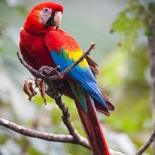

Scarlet Macaw

one of the most beautiful birds you’ll
ever set your eyes on. They’re recognizable by their
distinct red plumage and a complementary cobalt blue back.
These iconic birds wear
attractive yellow feathers tipped with green on their upper wings. The lower wing is a
magical fusion of blue and yellow feathers.
Scarlet macaws use their super strong curved beaks to crack through tough nuts like we
chew crackers.
The top part of the back is a light tan with a black tip and base, adding to
their overall distinctive beauty.
Scarlet macaws live long and enjoy life spans of between 40 and 50 years in the wild.
In captivity, they live even
longer and can manage a staggering 75 years. At maturity,
they can weigh up to 2.2 lbs.